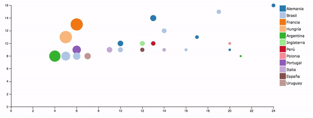

Actividad D3: Dada la información de los goleadores de los mundiales en un Google Spreadsheet crear un gráfico scatterplot usando d3.js y CSS.
Como podemos ver en este archivo, la data está en un archivo de Google Spreadsheet. Esto nos da la flexibilidad para poder actualizar la data de nuestra visualización de forma muy fácil en el futuro.
Usaremos la librería TABLETOP para cargar la data desde el spreadsheet a nuestro archivo.
Para acceder a la data, el spreadsheet debe estar publicado para la web:
Template para empezar a trabajar Ver template
//Aquí va la dirección del spreadsheet
var url = 'https://docs.google.com/spreadsheets/d/1IutWx3iCEXDTC3qYSZaaN4qlZnuYz0mg1tbDtFa-RqU/edit?usp=sharing';
//Función de tabletop para traer la data
Tabletop.init( { key: url,
callback: dibujar,
simpleSheet: true,
parseNumbers:true } );
//Función propia que recibe la data cuando ya está cargada y podemos dibujar nuestra viz
function dibujar(data){
//Imprime data
console.log(data);
}
Definimos variables con tamaños y creamos el SVG
// Tamaños
var margin = {top: 20, right: 20, bottom: 150, left: 40},
width = 960 - margin.left - margin.right,
height = 500 - margin.top - margin.bottom;
// Crear SVG
var svg = d3.select("#chart").append("svg")
.attr("width", width + margin.left + margin.right)
.attr("height", height + margin.top + margin.bottom)
.append("g")
.attr("transform", "translate(" + margin.left + "," + margin.top + ")");Calcular el máximo de cada variable a utilizar.
//Máximos
var golesMax = d3.max(data,function(d){
return d.goles;
});
var partidosMax = d3.max(data,function(d){
return d.partidos;
});Setear las escalas para cada eje.
//Escalas
var x = d3.scale.linear()
.domain([0,partidosMax])
.range([0, width]);
var y = d3.scale.linear()
.domain([0,golesMax])
.range([height, 0]);Crear los ejes con las escalas y agregarlos al svg.
//Ejes
var xAxis = d3.svg.axis()
.scale(x)
.orient("bottom");
var yAxis = d3.svg.axis()
.scale(y)
.orient("left");
svg.append("g")
.attr("class", "x axis")
.attr("transform", "translate(0," + height + ")")
.call(xAxis)
svg.append("g")
.attr("class", "y axis")
.call(yAxis);Creamos los círculos y los ubicamos de acuerdo a las escalas
//Círculos
svg.selectAll(".circulos")
.data(data)
.enter()
.append("circle")
.attr("class", "circulos")
.attr("cx", function(d) { return x(d.partidos); })
.attr("cy", function(d) { return y(d.goles); })
.attr("r", function(d) { return 20 });Calculamos máximo, creamos escala y aplicamos radio.
//Promedio máximo
var promedioMax = d3.max(data,function(d){
return d.promedio;
});
//Escala para radio
var radio = d3.scale.linear()
.domain([0,promedioMax])
.range([0, 20]);
//Modifico el radio del círculo para que utilice la escala
//...
.attr("r", function(d) { return radio(d.promedio); });
Calculamos máximo, creamos escala y aplicamos radio.
//Creo la escala de colores
var color = d3.scale.category20();
//Agrego el color al círculo usando la escala basado en el equipo
//...
.style("fill", function(d) { return color(d.equipo);})
Creamos la leyenda con el cuadrado y el nombre.
//Legend
var legend = svg.selectAll(".legend")
.data(color.domain())
.enter().append("g")
.attr("class", "legend")
.attr("transform", function(d, i) { return "translate("+(width+20)+"," + i * 22 + ")"; });
// draw legend colored rectangles
legend.append("rect")
.attr("x", 0)
.attr("width", 20)
.attr("height", 20)
.style("fill", color);
// draw legend text
legend.append("text")
.attr("x", 22)
.attr("y", 15)
.text(function(d) { return d;})Eventos sobre los círculos
.on("mouseenter", function(d){
console.log('entra',d);
})
.on("mouseout", function(d){
console.log('sale');
});Un nuevo círculo, suelto en el svg que lo moveremos cuando sea pasemos por otro círculo.
//Círculo de selección
var seleccion = svg.append('circle')
.attr("class", "seleccion")
.attr('cx',0)
.attr('cy',0)
.attr('r',10)
.style('fill','none')
.style('stroke','black')
.style('stroke-width',2);Cambiamos ubicación, color y radio del círculo al hacer contacto con el mouse.
seleccion
.attr('cx',x(d.partidos))
.attr('cy',y(d.goles))
.attr('r',radio(d.promedio)+4)
.style('stroke',color(d.equipo));Hacemos que aparezca apagado y se prenda cuando lo necestamos y se vuelva a apagar.
//invisible
.style('opacity',0);
//visible
.style('opacity',1);
Usamos transition para agrandarlo al momento del mouseenter y achicharlo en el mouseout
.on("mouseenter", function(d){
seleccion
.attr('cx',x(d.partidos))
.attr('cy',y(d.goles))
.attr('r',0)
.style('stroke',color(d.equipo))
.transition()
.duration(500)
.attr('r',radio(d.promedio)+4)
.style('opacity',1);
})
.on("mouseout", function(d){
seleccion
.transition()
.duration(200)
.attr('r',0)
.style('opacity',0);
});Mostramos el nombre del jugador, cuando estemos por encima del círculo.
var seleccionTexto = svg.append('text')
.attr("class", "seleccionTexto")
.attr('x',0)
.attr('y',0)
.attr('text-anchor',"middle")
.text('ejemplo de texto');Creamos un texto suelto
En el mousenter lo ubicamos y le ponemos el texto del nombre.
Agregar estilo y color a gusto. :D
seleccionTexto
.attr('x',x(d.partidos))
.attr('y',y(d.goles)-radio(d.promedio)-5)
.text(d.nombre);Sin más ayuda que la documentación, crear estas líneas que ayudan a identificar el valor en el eje.
¿Quedó algo parecido a Ver solución ?